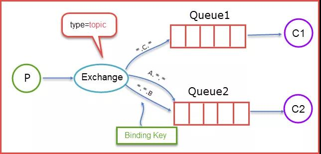

为什么要使用消息队列-MQ
不要跟风 使用MQ是为了：
- 解耦:
传统模式下系统间耦合性太强，比如系统A在代码中直接调用系统B和系统C的代码，如果将来D系统接入，系统A还需要修改代码，过于麻烦！
使用了MQ后系统A将消息写入消息队列，需要消息的系统B、C、D自己从消息队列中订阅，从而系统A不需要做任何修改。
- 异步:
传统模式下一些非必要的业务逻辑以同步的方式运行，太耗费时间！
使用了MQ后系统A将消息写入消息队列，非必要的业务逻辑以异步的方式运行，加快响应速度。
- 削峰:
传统模式下并发量大的时候，所有的请求直接连接到数据库，会造成数据库连接异常从而引起系统崩溃！
使用了MQ后系统A慢慢的按照数据库能处理的并发量，从消息队列中慢慢拉取消息，减少后端的压力。在生产中，这个短暂的高峰期积压是允许的。不要挖坑 不管是引入MQ技术，还是其他技术，有利也有弊：
- 系统可用性降低: 引入MQ之后一旦MQ不可用之后(提供MQ的服务挂掉了)，那凡是关联使用的系统都会受到影响，因此，系统可用性降低
- 系统复杂性增加: 要多考虑很多方面的问题，比如一致性问题、如何保证消息不被重复消费，如何保证保证消息可靠传输等等，会使得系统的复杂性增大(可能会引入一些潜在的bug)个人建议，要看实际项目的需求，业务量不是特别大的项目，不建议为了使用而使用。
当然如果项目中有以上的场景需求，或者使用传统模式时遇到了瓶颈时，大胆的引入吧(上面说的弊端也是有很多解决方案的，如可以搭建MQ集群来保持MQ的高可用性)！
使用哪种方案
目前常见和使用广泛的MQ有ActiveMQ、RabbitMQ、RocketMQ、Kakfa，至于使用哪个方案，还是要看使用场景的(公司规模、使用的语言、数据量等)
ActiveMQ
- ActiveMQ 5 “Classic”: 实际上ActiveMQ Classic原来就叫ActiveMQ，是Apache开发的基于JMS 1.1的消息服务器，目前稳定版本号是5.x
- ActiveMQ Artemis: ActiveMQ Artemis是由RedHat捐赠的HornetQ服务器代码的基础上开发的，目前稳定版本号是2.x。
和ActiveMQ Classic相比，Artemis版的代码与Classic完全不同，并且，它支持JMS 2.0，使用基于Netty的异步IO，大大提升了性能。
此外，Artemis不仅提供了JMS接口，它还提供了AMQP接口，STOMP接口和物联网使用的MQTT接口。
官网上有这么一句话：
There are currently two “flavors” of ActiveMQ available - the “classic” 5.x broker and the “next generation” Artemis broker. Once Artemis reaches a sufficient level of feature parity with the 5.x code-base it will become ActiveMQ 6. Initial migration documentation is available.
翻译过来就是目前有两种“风格”的ActiveMQ可用-“经典”5.x代理和“下一代”Artemis代理。一旦Artemis与5.x代码基达到足够的特性奇偶校验级别，它将成为ActiveMQ6。
可以看到ActiveMQ目前属于转型期，如果是新项目的话，还是期待下ActiveMQ6的发布吧。
RabbitMQ
RabbitMQ 是一个由Erlang语言开发的基于AMQP标准的开源实现，而Erlang语言天生具备高并发的特性，虽然懂的erlang的开发人员不多，无法进行定制化，
但RabbitMQ的社区十分活跃，可以解决开发过程中遇到的常见问题，而且提供的管理界面用起来十分方便，这对于中小型公司来说十分重要。
Kafka
kafka 是最初由Linkedin公司开发，是一个分布式、分区的、多副本的、多订阅者，基于zookeeper协调的分布式日志系统（也可以当做MQ系统），
常见可以用于web/nginx日志、访问日志，消息服务等等，Linkedin于2010年贡献给了Apache基金会并成为顶级开源项目。
如果是大数据领域或者有日志采集功能的，肯定是首选kafka
RocketMQ
当然如果项目使用了阿里云的全家桶，可以试试阿里出品的 RocketMQ (当然在2016年底已经贡献给了Apache，成为了Apache的一个顶级项目)
RocketMQ中文资料丰富，也得到了阿里各个系统的验证，对于一般的项目来说，直接拿来就可以用。
而且针对rocketMQ,大型软件公司也可以抽出人手对rocketMQ进行定制化开发，毕竟国内有能力改JAVA源码的人，还是相当多的。
Redis
最后补充一个Redis，虽然它是一个Key-Value数据库存储系统，但它本身支持MQ功能，所以完全可以当做一个轻量级的队列服务来使用。
对于RabbitMQ和Redis的入队和出队操作，各执行100万次，每10万次记录一次执行时间。测试数据分为128Bytes、512Bytes、1K和10K四个不同大小的数据。
实验表明：
- 入队时，当数据比较小时Redis的性能要高于RabbitMQ，而如果数据大小超过了10K，Redis则慢的无法忍受；
- 出队时，无论数据大小，Redis都表现出非常好的性能，而RabbitMQ的出队性能则远低于Redis。当项目中已经引入了Redis且数据量和并发量(其实一般公司的项目，并不会太大)不是非常大的话，也可以直接利用Redis的MQ功能来作为消息队列的中间件
总结
其实各个方案都有其优点和使用场景：
- ActiveMQ Artemis：支持协议较多，所以项目需要支持不同语言不同协议(例如与物联网相关系统交互的MQTT协议)项目的消息队列，优先选用
- RabbitMQ：官方提供管理页面，可以较简单的管理重复消息，所以如果没有定制化的需求，且吞吐量要求不是那么高(单机吞吐量万级以上)的，优先选用
- RocketMQ: 阿里出品，如果会用到顺序消息、事务消息等，或者项目部署在阿里云中，使用了其他的阿里云的产品，不妨直接试试RocketMQ
- Redis: 如果不想引入新的中间件(当然有利有弊,一旦挂了则缓存+消息队列都不可用了)，且对数据量要求不那么大的话，可以采用
- Kafka: 基本上日志收集、消息系统、活动追踪、运营指标、流式处理、时间源等都是用kafka，阿里云、腾讯云都推出了Kafka的云服务，可直接在云服务商直接开通使用
关于部署，日常开发中建议直接使用docker安装，线上的话如果资金到位建议使用云服务提供的MQ服务，能省去不少事情(尤其是维护成本)


如何保证可靠性

如何保证消息队列是高可用的？
如何保证消息不被重复消费？
如何保证消费的可靠性传输?
如何保证消息的顺序性？ 推荐RocketMQ
如何解决消息队列的延时以及过期失效问题？消息队列满了以后该怎么处理？有几百万消息持续积压几小时怎么解决？
消息队列常见问题和解决方案消息队列常见问题和解决方案 这篇文章写的不错，暂且收藏了
不过在尝试解决这些问题时有必要明白一点，其实小公司业务量不大，并发量不高的情况下这些问题是几乎不会发生的……
即使偶尔出现，开发人员手动修复数据处理就好。所以可结合公司实际业务场景看有没有必要解决这些问题。
不过对于技术人员来说，还是有必要了解一下。
Spring Boot中的集成使用
– 未完，待整理 –
RabbitMQ 的三种类型的交换器
RabbitMQ 使用 Exchange(交换机)和 Queue(队列)来实现消息队列
广播式交换器类型(Fanout)
该类交换器不分析所接收到消息中的 Routing Key，默认将消息转发到所有与该交换器绑定的队列中去

直接式交换器类型(Direct)
该类交换器需要精确匹配 Routing Key 与 Binding Key，如消息的 Routing Key = Cloud，那么该条消息只能被转发至 Binding Key = Cloud 的消息队列中去

主题式交换器(Topic Exchange)
该类交换器通过消息的 Routing Key 与 Binding Key 的模式匹配，将消息转发至所有符合绑定规则的队列中。
Binding Key 支持通配符，其中“*”匹配一个词组，“#”匹配多个词组(包括零个)
